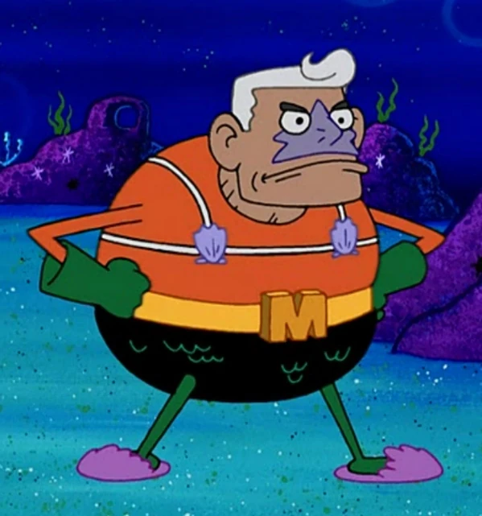
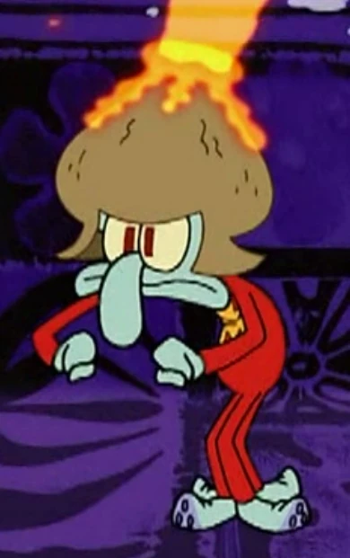
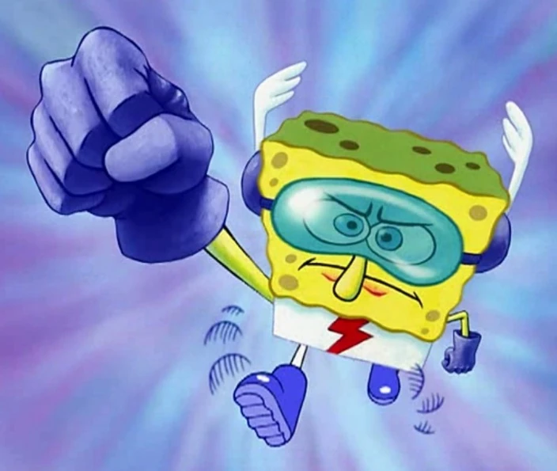
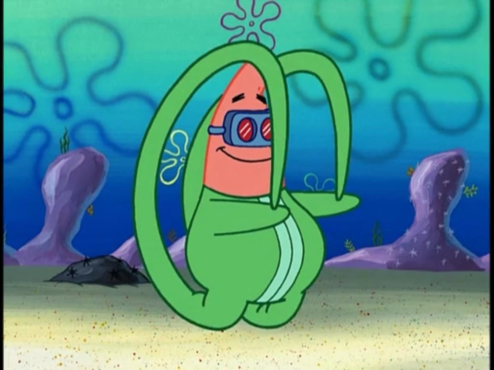
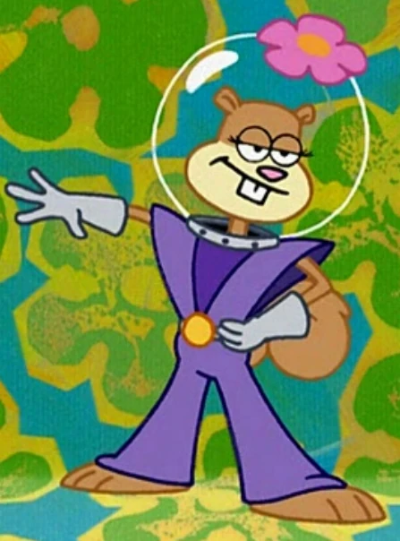

The greatest heroes in Bikini Bottom.
| Character Photo | Character Description/Ablity | Character Weaknesses |
|---|---|---|
|  | Mermaid Man is the leader of the League and was once the strongest before he aged. Power: Shoots Powerful Waterballs | Weakness: Falling on his back |
|  | He is Squidward Tentacles with a Volcano Helmet. He has insane magma powers despite living underwater. Power: Shoots Magma out of his Volcano Helmet |
Weakness: Anything water (Besides being underwater already) |
|  | He is Spongebob SquarePants with uncanny speed. He is the quickest speedster. Power: Runs extremely fast |
Weakness: Running in circles traps him in a hole |
|  | He is Patrick Star in a special green suit with red goggles. He has insane flexibility Power: Stretches very long |
Weakness: Can be turned into a long piece of rubber |
|  | She is Sandy Cheeks in a purple costume. Her powers allow her to stealthly get behind enemy lines. Power: Turns Invisible |
Weakness: Can be hit accidentally |